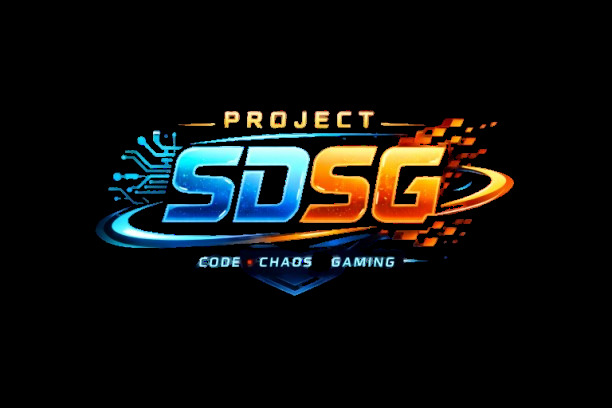

Added mario64(its in mario)
new sprites as you saw in the intro
updated MION(inside of earthbound)
added EBB SNES HACK(in the earhbound game)
removed cosmic proxy from games to tools
added fucking gnat attack from mario paint in here